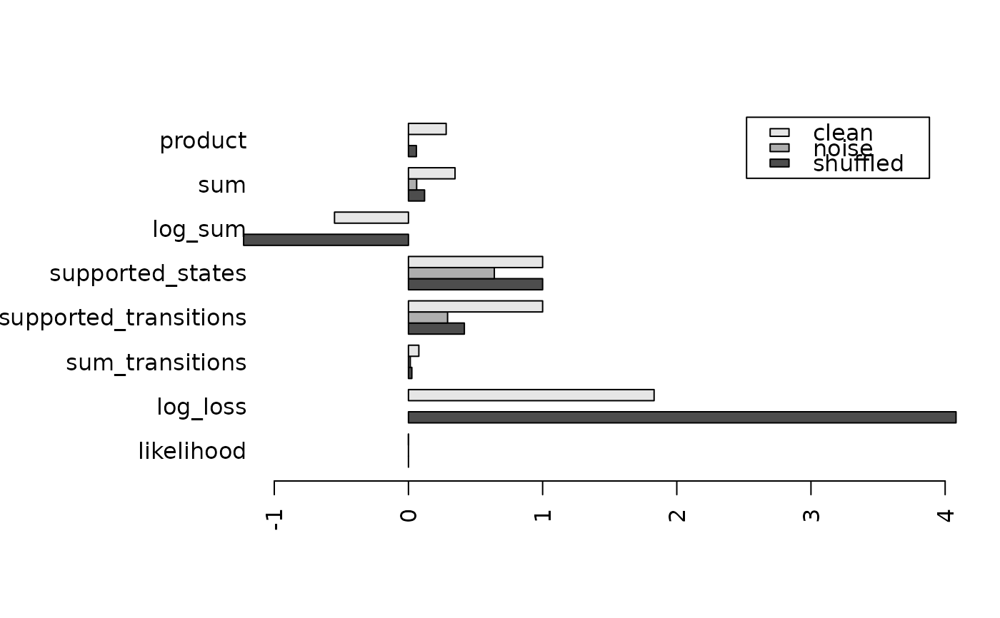
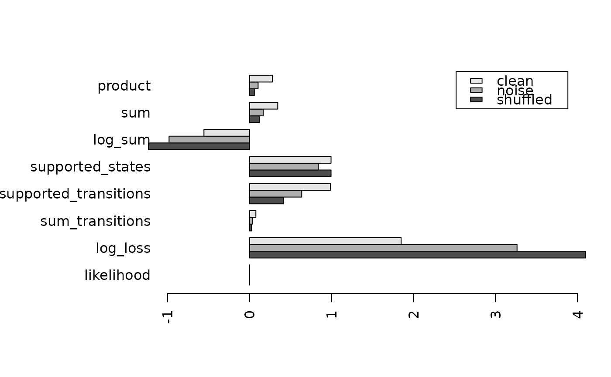

Calculates a score of how likely it is that a new sequence was generated by the same process as the sequences used to build the EMM.
Usage
# S4 method for class 'EMM,matrix'
score(
x,
newdata,
method = c("product", "log_sum", "sum", "log_odds", "supported_transitions",
"supported_states", "sum_transitions", "log_loss", "likelihood", "log_likelihood",
"AIC"),
match_cluster = "exact",
random = FALSE,
prior = TRUE,
normalize = TRUE,
initial_transition = FALSE,
threshold = NA
)
# S4 method for class 'EMM,EMM'
score(
x,
newdata,
method = c("product", "log_sum", "sum", "supported_transitions"),
match_cluster = "exact",
random = FALSE,
prior = TRUE,
initial_transition = FALSE
)Arguments
- x
an
EMMobject.- newdata
sequence or another
EMMobject to score.- method
method to calculate the score (see details)
- match_cluster
do the new observations have to fall within the threshold of the cluster (
"exact") or is nearest neighbor ("nn") or weighted nearest neighbor (weighted) used? Ifmatch_clusteris a number n then observations need to fall within n times the clustering threshold of the cluster.- random
logical; should the order of newdata be randomized? Can be used to compare the score with the actual score.
- prior
logical; add one to each transition count. This is equal to start with a count of one for each transition, i.e. initially all transitions are equally likely. It prevents the product of probabilities to be zero if a transition was never observed.
- normalize
logical; normalize the score by the length of the sequence.
- initial_transition
logical; include the initial transition in the computation?
- threshold
minimum count threshold used by supported transitions and supported states.
Details
The scores for a new sequence \(x\) of length \(l\) can be computed
by the following methods. For match_cluster="exact" or "nn":
- "product"
Product of transition probabilities along the path of \(x\) in the model. A single missing transition (transition probability of zero) will result in a score of 0. Use
priorto avoid this. $$S_\mathrm{product} = \sqrt[l-1]{\prod_{i=1}^{l-1}{a_{s(i),s(i+1)}}}$$where \(a_{s(i),s(j)}\) is the transition probability between the state representing positions \(i\) and \(j\) in the sequence.
- "sum"
Average of transition probabilities along the path of \(x\) in the model. $$S_\mathrm{sum} = \frac{1}{l-1} \sum_{i=1}^{l-1}{a_{s(i),s(i+1)}}$$
- "log_sum"
Average of the log of the transition probabilities along the path of \(x\) in the model. The ranking of the scores is equivalent to the product of probabilities, however, the calculation is more reliable since the product of probabilities might become a very small number.
A single missing transition (transition probability of zero) will result in a score of neg. infinity. Use
priorto avoid this.$$S_\mathrm{log\_sum} = \frac{1}{l-1} \sum_{i=1}^{l-1}{\mathrm{log}(a_{s(i),s(i+1)})}$$
- "supported_transitions"
Fraction of transitions in the new sequence \(x\) supported (present) in the model after assigning each data point in \(x\) to a state in the model. $$S_\mathrm{supported\_transitions} = \frac{1}{l-1} \sum_{i=1}^{l-1}{\mathrm{I}(a_{s(i),s(i+1)})}$$
- "supported_states"
Fraction of points in the new sequence \(x\) for which a state (cluster) exists in the model.
match_clusteris always"exact"because for"nn"this measure would always give 1. Note that this measure ignores transition information.If threshold is given, then only states with a count greater than the given threshold are counted as supported.
- "sum_transitions"
Sum of the counts on the edges in the model on the path of sequence \(x\) normalized by the total number of transition counts in the model. $$S_\mathrm{sum\_transitions} = \frac{1}{l-1} \sum_{i=1}^{l-1}c_{s(i),s(i+1)}$$
where \(c_{s(i),s(i+1)}\) is the transition count between the state representing positions \(i\) and \(j\) in the sequence.
If threshold is given, then only transitions with a count greater than the given threshold are counted as supported.
- "likelihood", "log_likelihood"
The likelihood of the model given the new data is the unnormalized product score (product of transition probabilities).
- "log_loss"
The average log loss is defined as $$-sum(log2(a_s(i),s(i+1)))/(l-1)$$ It represents the average compression rate of the new sequence given the model.
- "AIC"
Akaike Information Criterion corrected for finite sample size. $$2k - 2log(L) 2k(k-1)/(n-k-1)$$ where \(n=l-1\) and \(k\) is the model complexity measured by the number of non-zero entries in the transition matrix. We use the likelihood of the model given by the proportion of supported transitions. AIC can be used for model selection where the smallest value indicates the preferred model.
where \(x_i\) represents the \(i\)-th data point in the new sequence, \(a(i,j)\) is the transition probability from state \(i\) to state \(j\) in the model, \(s(i)\) is the state the \(i\)-th data point (\(x_i\)) in the new sequence is assigned to. \(\mathrm{I(v)}\) is an indicator function which is 0 for \(v=0\) and 1 otherwise.
For match_cluster="weighted":
- "product"
Weighted version of the product of probabilities. The weight is the similarity between a new data point and the state in the model it is assigned to. $$S_\mathrm{weighted\_product} = \sqrt[l-1]{\prod_{i=1}^{l-1}{\mathrm{simil}(x_i,s(i))\mathrm{simil}(x_i,s(i+1)) a_{s(i),s(i+1)}}}$$
- "sum"
Weighted version of the sum of probabilities. $$S_\mathrm{weighted\_sum} = \frac{1}{l-1} \sum_{i=1}^{l-1}{\mathrm{simil}(x_i,s(i))\mathrm{simil}(x_i,s(i+1)) a_{s(i),s(i+1)}}$$
- "log_sum"
Weighted version of the sum of the log of probabilities. $$S_\mathrm{weighted\_log\_sum} = \frac{1}{l-1} \sum_{i=1}^{l-1}{\mathrm{log}(\mathrm{simil}(x_i,s(i))\mathrm{simil}(x_i,s(i+1)) a_{s(i),s(i+1)})}$$
- "supported_states"
Same as
"supported_states"but instead of counting the supported states, the similarity \(\mathrm{simil}(x_i,s(i))\) is used as a weight. Threshold is not implemented.
where \(\mathrm{simil}(\cdot)\) is a modified and normalized similarity function given by \(\mathrm{simil}(x,s) = 1- \frac{1}{1+e^{-\frac{\mathrm{d}(x, s)/t -1.5}{.2}}}\) where \(d\) is the distance measure and \(t\) is the threshold that was used to create the model.
See also
transition to access transition probabilities
and find_clusters for assigning observations to states/clusters.
Examples
data("EMMsim")
emm <- EMM(threshold = .2)
emm <- build(emm, EMMsim_train)
# default is method "product". The score is much higher compared to a randomized order.
score(emm, EMMsim_test)
#> [1] 0.2811003
score(emm, EMMsim_test, random = TRUE)
#> [1] 0.05051316
### create shuffled data (destroy temporal relationship)
### and create noisy data
test_shuffled <- EMMsim_test[sample(1:nrow(EMMsim_test)), ]
test_noise <- jitter(EMMsim_test, amount = .3)
### helper for plotting
mybars <- function(...) {
oldpar <- par(mar = c(5, 10, 4, 2))
ss <- rbind(...)
barplot(
ss[, ncol(ss):1],
xlim = c(-1, 4),
beside = TRUE,
horiz = TRUE,
las = 2,
legend.text = rownames(ss)
)
par(oldpar)
}
### compare various scores
methods <- c(
"product",
"sum",
"log_sum",
"supported_states",
"supported_transitions",
"sum_transitions",
"log_loss",
"likelihood"
)
### default is exact matching
clean <-
sapply(
methods,
FUN = function(m)
score(emm, EMMsim_test, method = m)
)
shuffled <-
sapply(
methods,
FUN = function(m)
score(emm, test_shuffled, method = m)
)
noise <-
sapply(
methods,
FUN = function(m)
score(emm, test_noise, method = m)
)
mybars(shuffled, noise, clean)

### weighted matching is better for noisy data
clean <-
sapply(
methods,
FUN = function(m)
score(emm, EMMsim_test, method = m,
match_cluster = "weighted")
)
shuffled <-
sapply(
methods,
FUN = function(m)
score(emm, test_shuffled, method = m,
match_cluster = "weighted")
)
noise <-
sapply(
methods,
FUN = function(m)
score(emm, test_noise, method = m,
match_cluster = "weighted")
)
mybars(shuffled, noise, clean)
